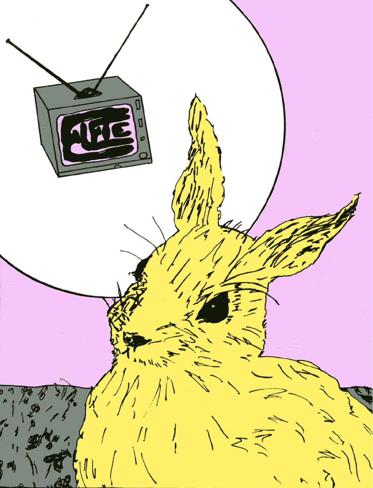
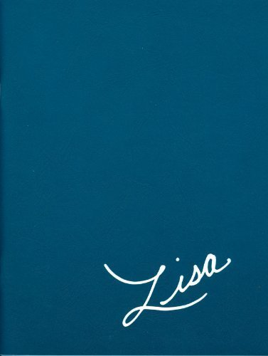

Case Study
Institute for the Advancement of Philosophy for Children
The Institute for the Advancement of Philosophy for Children (IAPC) at Montclair State University is the originating home of Philosophy for Children (P4C), founded in 1974 by Matthew Lipman and Ann Margaret Sharp. P4C uses purpose-written philosophical novels as the entry point for structured classroom inquiry: children's fiction in which characters encounter genuinely difficult questions, prompting a community of inquiry in which students reason together rather than receive answers. The IAPC now has affiliate centers in nearly forty countries, and its curriculum has been translated and culturally adapted into sixteen languages.
Since 2021 I have worked with the IAPC as a designer on the professional redesign of its novel series. The work is ongoing: four books completed — Harry Stottlemeier's Discovery, Pixie, Elfie, and Lisa — with a fifth, Suki, currently in progress. Each has been taken from manuscript to print-ready PDF and digital ePub, with typesetting, editorial preparation, and faithful recreation of the original cover art, illustrations, and diagrams throughout.
The P4C novels were written in the 1970s and remained largely unchanged since: designed for mimeograph and early photocopier reproduction, copied and circulated in whatever format was available. Decades of international adoption produced ad-hoc translations and transcriptions of degraded copies that introduced real inaccuracies into the texts. The premise of this project was a canonical rebuild: clean the manuscripts, resolve the textual inconsistencies, and produce contemporary editions suitable for print and digital distribution with web accessibility standards met.
Every aspect of the reading artifact was in scope: typography, page layout, chapter structure, the handling of philosophical diagrams embedded in the narrative, cover design and cover art. The covers and internal diagrams existed in the original editions but had degraded along with the texts; recreating them accurately for contemporary production meant working from the originals as reference and reconstructing them in vector and raster formats capable of high-resolution print and screen output. Because the books needed to work both in fixed-format print and in reflowable ePub, some structural decisions that are standard in print (line numbers, for instance) had to be rethought entirely. Each book required separate InDesign files optimized for the two output formats. All completed books were assigned ISBNs, licensed under Creative Commons, and deposited in Montclair's institutional repository.
Each book has its own design identity matched to its readership and philosophical focus. Harry Stottlemeier's Discovery (fifth grade, formal logic) uses a purely typographic cover: the title set in spaced serif capitals arranged into a question mark. Pixie (third and fourth grade, language and meaning) has an illustrated cover and includes diagram pages for the passages where characters reason about how words relate to things.

Elfie (first and second grade, thinking about thinking) has a loose, hand-drawn cover illustration: a rabbit contemplating a television set displaying its own title, capturing the metacognitive focus in a form a six-year-old can read. Lisa (sixth and seventh grade, ethics and social reasoning) is the most minimal: a handwritten cursive signature in white on flat teal, treating its protagonist as someone the reader should take seriously.

The philosophical content in P4C is often inherently visual — characters sketch relationships, draw Euler circles, work through arguments on paper — and recreating these elements meant producing vector graphics that function both as reading aids and as objects students can annotate. The constraint throughout was the same one that governs P4C itself: a diagram that resolves the philosophical problem it is supposed to open up has done the opposite of its job.
Designing curriculum materials differs from trade publishing because the reader's relationship to the text is structured in advance: there is a teacher, a discussion, a set of questions that the reading is meant to generate. The design has to leave room for that. Recreating rather than originating the covers and diagrams made this legible in a particular way: the task was to understand what the original design was doing and preserve that intent in a form that works at contemporary production standards, without imposing a new visual interpretation on material that already has one.
No formal study of the redesigns has been conducted, but the new editions have been gratefully received by the P4C community for their accessibility, both in the sense of meeting contemporary digital accessibility standards and in the more basic sense of being readable, navigable, and available in formats that work for the classrooms and contexts where P4C is actually taught.